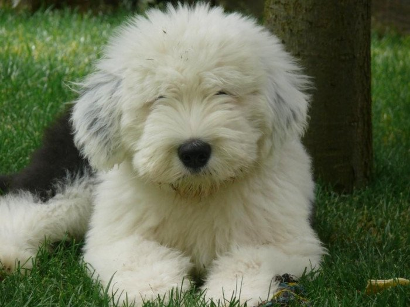

¿QUIENES SOMOS?
El Viejo Pastor ingles es inteligente e independiente. Pueden ser fuertes, dispuestos y necesitan una mano firme para guiarlos a lo largo del camino correcto. Tienen un remarcable sentido del humor y parecen disfrutar de la consternación de sus dueños en algunas de sus antigüedades.

COMO CUIDARLOS

Dieta:
Alimentación alta en proteína a base de croquetas, complementarla con algunas vitaminas que ayuden a conseguir ácidos grasos y minerales esenciales para su óptimo desarrollo.
Las calorías diarias que debe consumir son entre 1.400 y 1.500, siempre que el veterinario lo estime correcto, en función del ejercicio que el perro practique de forma cotidiana. Una ingesta normal de pienso seco completo para un bobtail adulto será de 500 a 600 gr diarios.